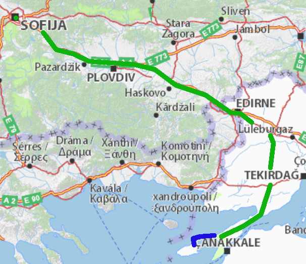
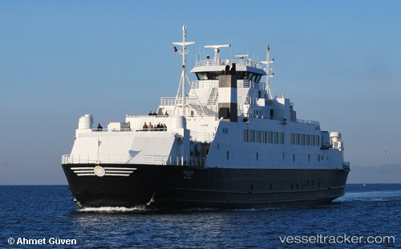

За това пътуване
Автомобил: 1030 kmКораб: 20 km
Общa Статистика
Самолет: 29415 kmАвтомобил: 26819 km
Влак: 3972 km
Кораб: 928 km
Общо: 61134 km
Градове: 52
Държави: 20
Континенти: 2
Уиндсърф в Гьокчеада
Пристигнахме в Кабатепе в ранния следобед. След около час бяхме на
борда на Gokceada 1, а след още един вече бяхме на брега на Гьокчеада.

София - Гьокчеада
Настанихме се на спота до един пич с пловдивска каравана, баща ми разпъна палатка а аз спях в колата. Мареата се оказа идеална за спане, комбито си е направо спалня. Бяхме близо до водата но това си имаше и цена – много пясък се яде, когато духа, както и липсва сянка. На острова сянката е кът, като цяло, ние ходихме под навеса на Чилик, на по чайче.

Gokceada-1
Освен за сърф острова става и за разходки. Интересни са няколкото малки градчета разположени в планините, гледките към морето са невероятни. Соленото езеро, също е голяма атракция.

Виж Галерията от Гьокчеада